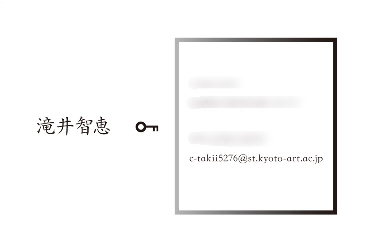
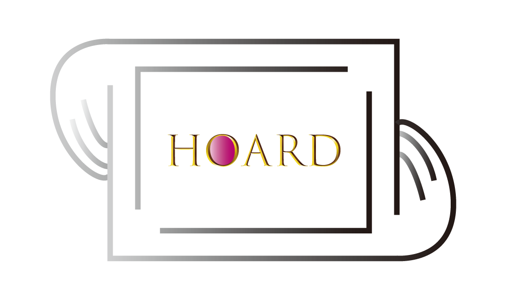
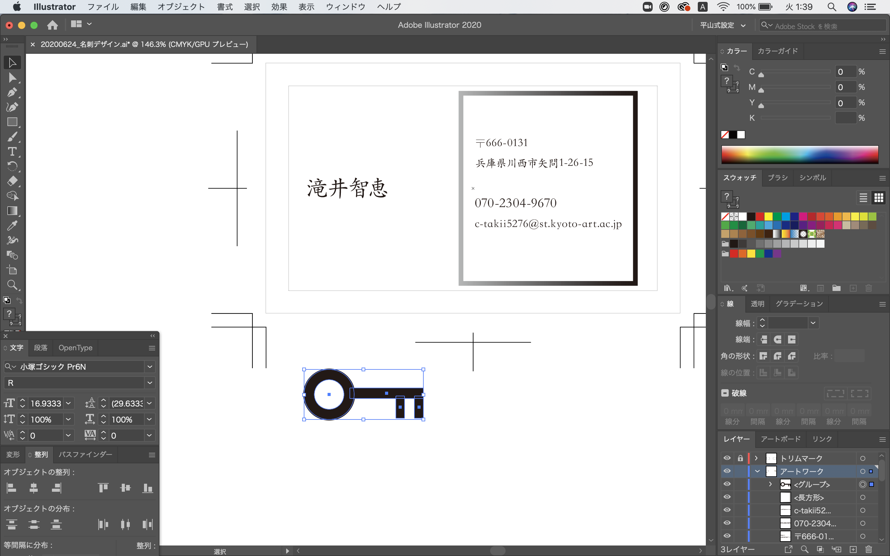
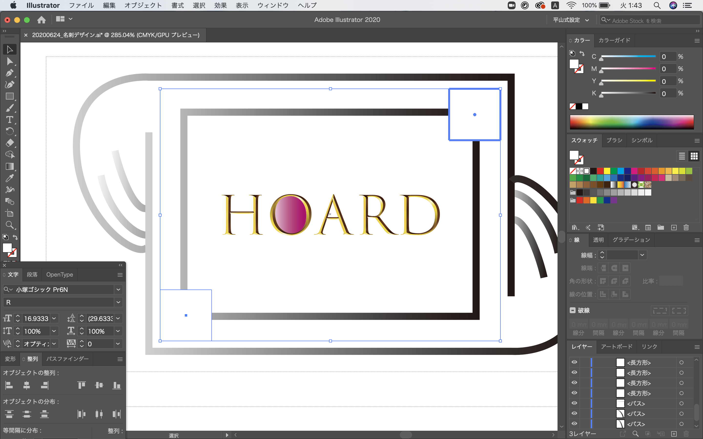
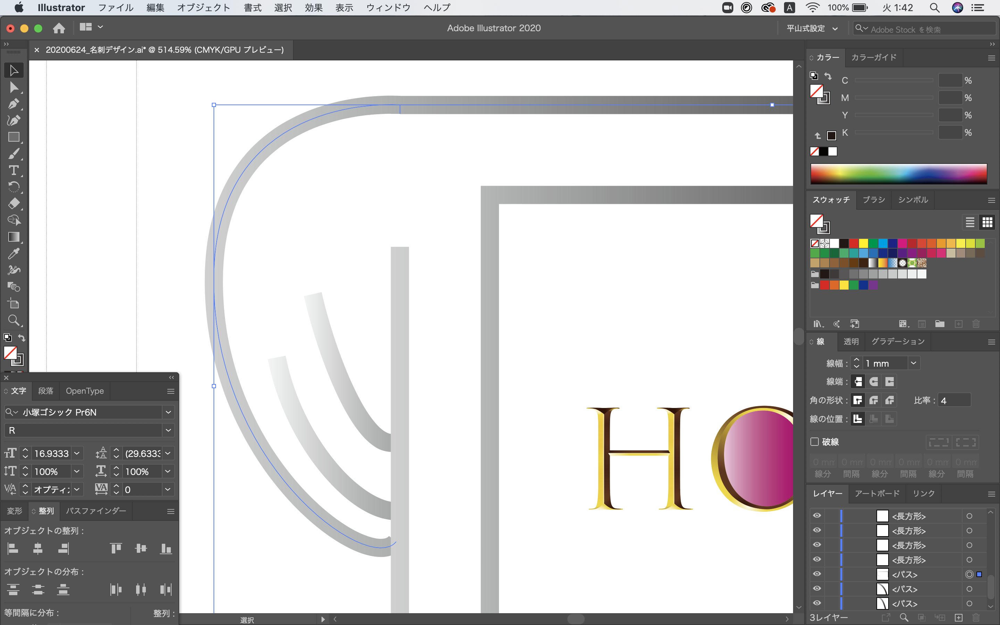
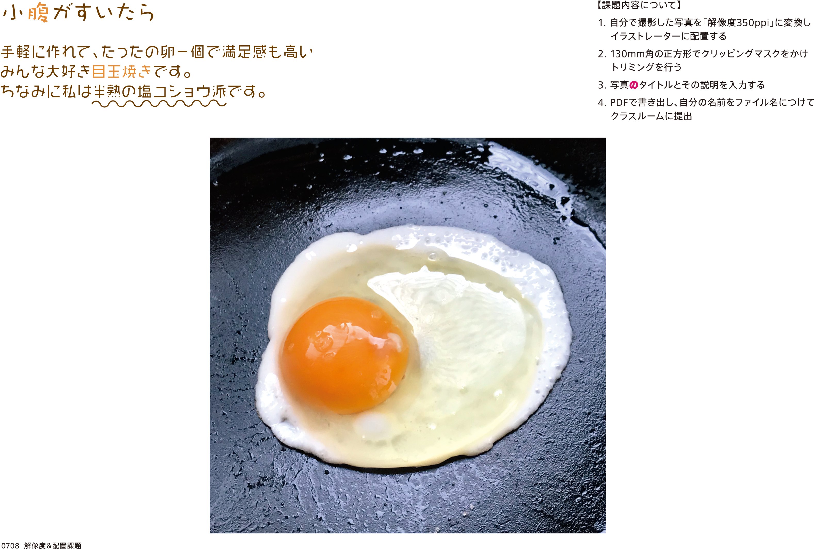
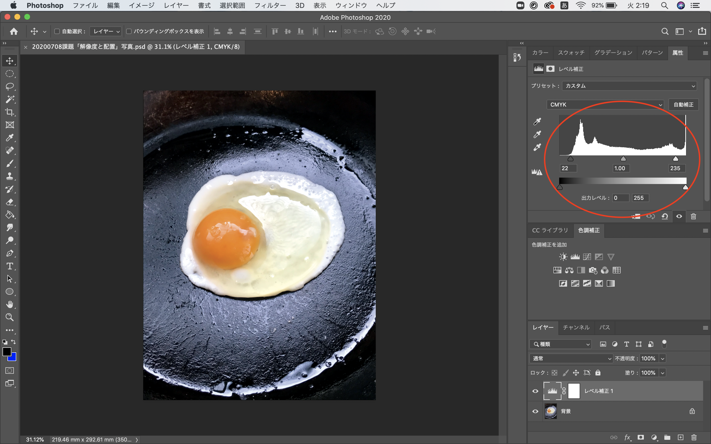
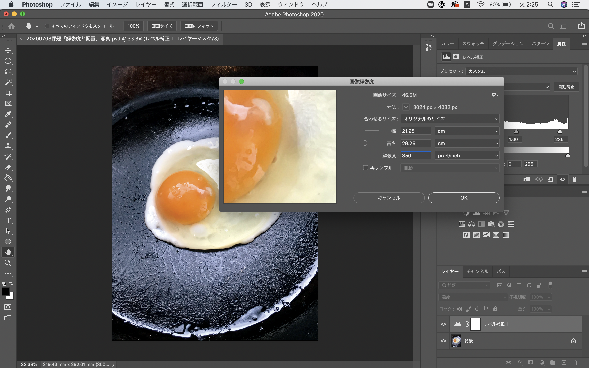
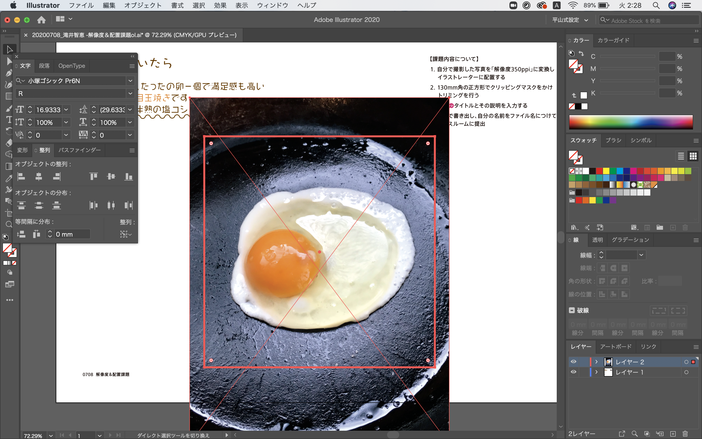
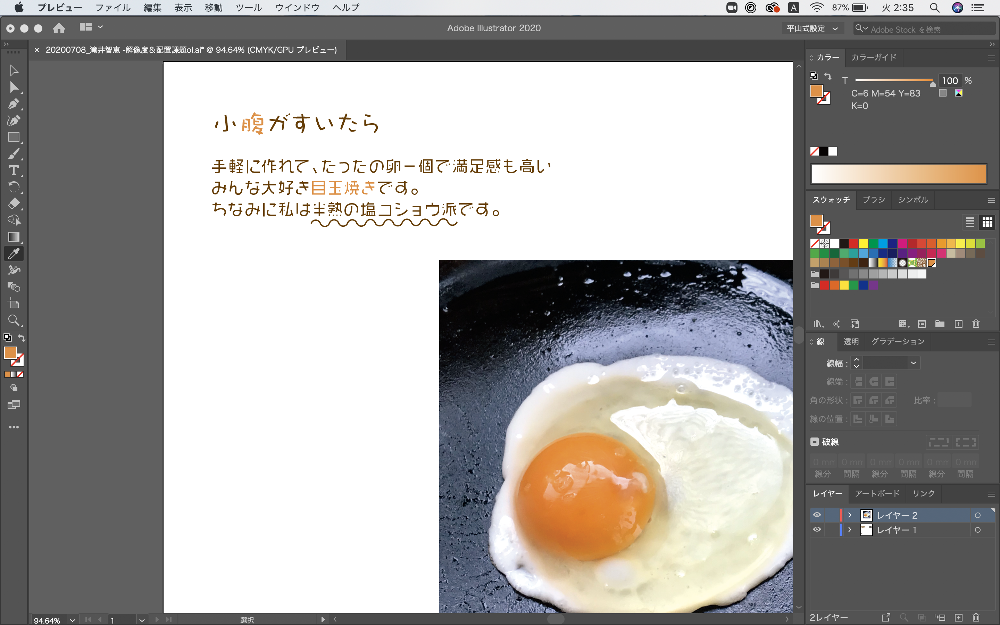

課題＆成果物
名刺デザイン
課題：Illustrationで架空の会社を想定し、自分の名刺を作る


ランダムに英単語が出てくるサイトにて出てきた単語「hoard/秘蔵」からイメージして、金庫の会社の名刺を作ることに決定しました。
黒の太枠は金庫を表しています。誠実で重厚な印象を与えるように黒を基調とし、グラデーションにしました。
枠の中の「HOARD」は宝石を表しています。シンプルなデザインの中で宝石のように輝き目立つように意識しました。
黒の太枠は金庫を表しています。誠実で重厚な印象を与えるように黒を基調とし、グラデーションにしました。
枠の中の「HOARD」は宝石を表しています。シンプルなデザインの中で宝石のように輝き目立つように意識しました。

まず大きいサイズで、単純な形を組み合わせて鍵の形を作り、その後サイズを調整しました。

枠も単純な形を組み合わせて作りました。

グラデーションを滑らかにするために、両端を繋げて一本の線にました。
解像度変更と配置
課題：Photoshopを使って解像度の高い写真を作り、Illustratorで写真のタイトルとその説明


レベル補正を調整することで画面がパキッとしました。

画像サイズを変えることで解像度を上げました。

指定サイズのオブジェクトを描き、Photoshopで作った写真と重ねてクリッピングマスクを作成し、オブジェクトの形に切り抜きました。

＊こだわり＊
「腹」と「目玉焼き」の黄色は写真の黄身から取った色を使いました。
「腹」と「目玉焼き」の黄色は写真の黄身から取った色を使いました。